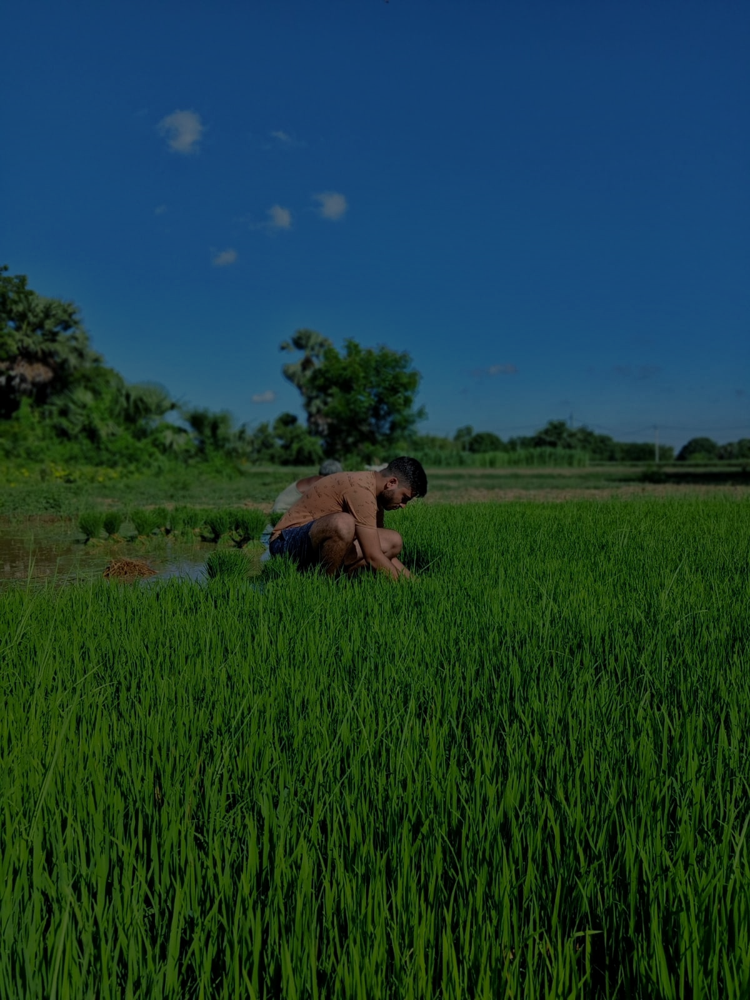

YOUR SMART FARMING ASSISTANT
Smart Crops, Smart Choices with AgriSens!
EXPLORE
AgriSens provides farmers with essential tools for smarter farming. It offers personalized crop recommendations based on soil and climate, helps identify plant diseases through image analysis, and provides real-time weather forecasts.
Introduce the talented individuals shaping the AgriSens project.